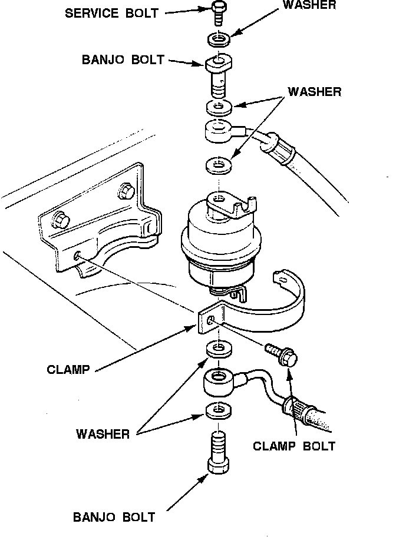

Components
Fuel Filter:

The Fuel Filter, is located on the right side of the firewall, is a replaceable in-line type. The fuel filter is equipped with a service bolt where system pressure can be relieved prior to servicing. It uses a paper element to trap contaminants before they can reach the fuel injectors.